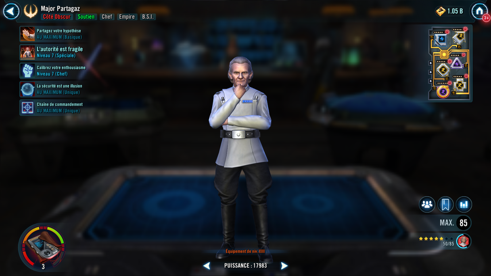

Major Partagaz
Major Partagaz led the ISB Board and focused on identifying unrest before it became a threat to Imperial safety
Major Partagaz led the ISB Board and focused on identifying unrest before it became a threat to Imperial safety

Inflict Health Down on target enemy for 2 turns. During his turn, call target other ISB ally to assist, dealing 25% more damage per Rank Major Partagaz has.
- If Major Partagaz is Rank 2 or above, all ISB allies gain Speed Up for 2 turns
- If Major Partagaz is Rank 3, also Daze the target enemy for 1 turn
Call all other ISB allies assist and recover 20% Health and Protection. If all allies are ISB, inflict all enemies with Target Lock for 2 turns. If the target enemy was already Target Locked, all ISB allies have their cooldowns reduced by 1.
- If Major Partagaz is Rank 3, Blind the target enemy for 2 turns and increase the cooldown of all enemies by 1
- Rank 2 or above ISB allies gain Retaliate for 2 turns and 5% Tenacity (stacking) for the rest of the battle
- Rank 3 ISB allies gain Tactical Supremacy for 2 turns
This ability can't be evaded or resisted.
At the start of battle, Major Partagaz inflicts Potency Down and Speed Down on all enemies for 2 turns. ISB allies gain 50% bonus Protection, 30 Speed, and ISB allies that are Rank 3 ignore Taunt effects on their turn until the end of battle. At the start of their turn, ISB allies have +25% Critical Chance, Defense, and Tenacity if they are Rank 1. These bonuses are doubled if they are Rank 2 and quadrupled if they are Rank 3.
Whenever an enemy recovers Protection, all ISB allies gain 5% Offense (stacking) until the end of battle. ISB allies deal 5% more damage when targeting a Target Locked enemy, and recover 5% Health and Protection. ISB allies inflict Speed Down for 2 turns whenever they attack out of turn.
Omicron Boost : While in Grand Arenas and all allies are ISB: Major Partagaz starts the battle at Rank 3 and gains 50 Speed. Whenever an allied ISB Support gains Retaliate, they also gain 20% bonus Protection for 1 turn and whenever an ISB ally is damaged, Major Partagaz gains 15% turn meter. The first time each ally falls below 30% Health, they recover 30% Health and Protection, ISB Support allies Stealth for 1 turn and ISB Tank allies Taunt for 1 turn.
Whenever Major Partagaz inflicts a debuff on an enemy, all enemies lose 5% Potency (stacking, max 50%). At the start of battle, if all allies are ISB, Major Partagaz can't be targeted for the rest of the battle. Whenever an enemy gains Foresight or Stealth, at the end of that turn, dispel it and Expose that enemy for 2 turns, with one stack for each Rank Major Partagaz has, which can't be evaded or resisted. Whenever an enemy recovers Protection, remove 5% of their Max Protection (stacking) until the end of battle. At the start of Major Partagaz's turn, all ISB allies gain 20% Offense for 2 turns. If there are no other allied combatants at the start of a turn, Major Partagaz escapes from battle.

Whenever an ISB ally is defeated, active ISB allies decrease their Rank by 1. If all allies are ISB, Major Partagaz starts the encounter at Rank 2. Whenever an ISB ally uses a Special ability, other ISB allies at Rank 2 or higher gain 10% counter chance (stacking) until the end of battle. Whenever an enemy is defeated, ISB allies increase their Rank by 1.